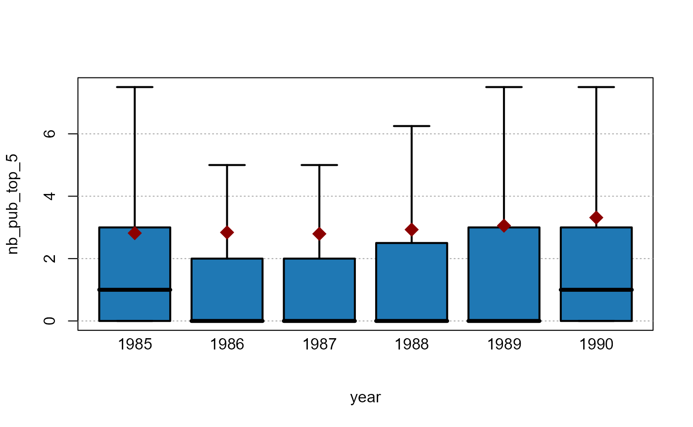

fplot walkthrough
Laurent Berge
2023-08-22
fplot_walkthrough.Rmdfplot plots of distributions, automatically adjusting
the parameters for the user. The syntax uses formulas, allowing
conditional/weighted distributions with minimum efforts. The many
arguments are automatically adjusted to provide the most meaningful (and
hopefully beautiful!) graphs depending on the data at hand.
Although the core of the package concerns distributions,
fplot also offers functions to plot trends (possibly
conditional) and conditional boxplots.
Since the main purpose of this package is to provide graphs ready for
publications, you can globally relabel all the variables to be displayed
with setFplot_dict. In this vignette this is done once:
setFplot_dict(c(Origin = "Exporting Country", Destination = "Importing Country", Euros = "Exports Value in €", jnl_top_25p = "Pub. in Top 25% journal", jnl_top_5p = "Publications in Top 5% journal", journal = "Journal", institution = "U.S. Institution", Petal.Length = "Petal Length"))Distributions
The function plot_distr plots distributions. The syntax
of the function plot_distr is as follows:
plot_distr(weight(s) ~ variable | moderator, data)
This function is extremely versatile: its default behavior totally depends on the data it deals with.
Categorical data
We will use data on publications extracted from the Microsoft Academic Graph.
This data corresponds to publications from U.S. institution in the field of economics in the period 1985-1990. Here is a sample of the data:
| paper_id | year | institution | journal | jnl_top_25p | jnl_top_5p |
|---|---|---|---|---|---|
| 865948 | 1988 | university of california berkeley | university of san francisco law review | 0 | 0 |
| 2027349 | 1990 | university of wisconsin madison | climatic change | 1 | 0 |
| 2299436 | 1988 | columbia university | marine resource economics | 0 | 0 |
| 2558483 | 1988 | yale university | journal of accounting auditing & finance | 0 | 0 |
| 2672463 | 1989 | university of michigan | administration in social work | 0 | 0 |
| 2860349 | 1985 | university of kansas | administration in social work | 0 | 0 |
What’s the distribution of publications per institutions?
# When there is only one variable, you can use a vector
plot_distr(us_pub_econ$institution)What can we remark? First only the first 15 most important
institutions are plotted. Indeed, since the institution variable is a
categorical data, plotting all the 444 different would have just
cluttered the graph and nothing could have been visible. We can increase
the number of bars plotted with argument nbins.
Although only the first are plotted, we still have information on the
institutions left with the last (broken) bar reporting the number of
publications that are left. We can avoid displaying this column with the
argument other = FALSE.
We can also notice that not only the graph of the distribution is
shown, but the number of observations is reported on the top of each bar
to have a quick insight of the total numbers. Further, the size of the
numbers always fit the width of the bars. The argument top
manages the information displayed on the top of the bars: it can be
numbers (top = "nb"), fractions
(top = "frac"), or nothing (top = "none"). The
default depends on the type of data.
Finally, the labels in the x-axis: i) all appear and ii) are
truncated meaningfully. Since the institution variable is categorical,
there is no way to deduce which institution each bar represent if it is
not displayed explicitly. They are further truncated at 20 characters
(argument trunc) and the truncation method tries to keep
the most information from the labels
(trunc.method = "auto"). But there are other truncation
methods, like trimming the right (resp. the middle) of the label with
trunc.method = "right" (resp.
trunc.method = "mid"). To display horizontal labels
instead, you can use labels.tilted = FALSE.
Now let’s weight the production of the institutions by the quality of the journals:
plot_distr(jnl_top_5p ~ institution, us_pub_econ)We added the weight directly in the left-hand-side of the formula. Notice that now Harvard ranks 1st (it was 3rd when not weighting by quality).
We can add several weights at the same time:
plot_distr(1 + jnl_top_25p + jnl_top_5p ~ institution, us_pub_econ)As we can see, the more we weight by quality, the more the distribution is skewed towards the top institutions.
Now we illustrate the conditional graphs by asking the question of what are the journals in which the 3 most productive institutions publish.
plot_distr(~ journal | institution, us_pub_econ)
#> The 3 moderators were chosen based on frequency.What happened? In the x-axis, the journals are displayed since they
are the “variable”, and since we added the institution as a moderator,
the data is broken down across each institution. But not all the 444
institutions are shown: by default only the three moderator values (here
institutions) that appear the most are reported. When there is an
automatic selection, a message is also prompted. The user can increase
the number of moderator values reported with the argument
mod.select, or provide the specific values to be shown.
The 7 most important journals are displayed for each institution and
the scale corresponds to the share of the journal within the
institution. Instead of displaying the within share, the total share
could have been displayed with the option total = TRUE.
Here the numbers on the top of the bars come handy to provide comparisons across institutions. Importantly, because the journal names are long, it would have been impossible to display them in a standard way. As we can see, they are first truncated (meaningfully) and then tilted. in the end, the graph is fully informative.
By default, when the data is split, the bar containing the “other” information is not displayed to save space. But of course, we can add it with the appropriate option:
# Previous graph + "other" column
plot_distr(~ journal | institution, us_pub_econ, other = TRUE)
#> The 3 moderators were chosen based on frequency.If you wish to select other moderator values, you can use
mod.select with regular expressions. Let’s have a look at
three Massachusetts institutions:
plot_distr(~ journal | institution, us_pub_econ, mod.select = "harvard|boston.+uni|mass.+inst")Numeric data
Now let’s illustrate the behavior of the function in presence of numerical data. We first import trade data:
| Destination | Origin | Product | Year | dist_km | Euros |
|---|---|---|---|---|---|
| LU | BE | 1 | 2007 | 139.5719 | 2966697 |
| BE | LU | 1 | 2007 | 139.5719 | 6755030 |
| LU | BE | 2 | 2007 | 139.5719 | 57078782 |
| BE | LU | 2 | 2007 | 139.5719 | 7117406 |
| LU | BE | 3 | 2007 | 139.5719 | 17379821 |
| BE | LU | 3 | 2007 | 139.5719 | 2622254 |
This data consists of importations between pairs of European countries for different products across time. Let’s look at the distribution of trade volume:
plot_distr(trade$Euros)Three main things can be remarked. First, the data has been
automatically set to logarithmic form beforehand in order to offer a
better display. This behavior can be changed with the argument
log. Second, the first column contains all the leftovers
that are lower than 1,097 – this allows to focus on the part of the
graph where there is the most variation. This is why the graph does not
start from 0 but rather is focused on the mode of the distribution.
Thanks to this first column, there is no loss of information while
ensuring greater readability. Finally, the numeric scale is formatted
for an easy reading.
Now let’s look at the distribution of French and German exports:
plot_distr(~ Euros | Origin, trade, mod.select = c("DE", "FR"))We use the argument mod.select to select the two
moderator values. For each logarithmic “bin”, the two moderators are
compared.
Now let’s look at another set of numeric data using the
iris data set.
plot_distr(iris$Petal.Length)For “well distributed” continuous data, it looks very much like a regular histogram, but a bit nicer. Note that the bin size is always “discrete” to allow easy reading. Now we can also split the data by species:
plot_distr(~ Petal.Length | Species, iris)Note that the full widths of the bins are reported in dashed lines, so that the user does not confuse the size of the total bin with the size of the bin for one single species.
Instead of displaying the three species on the same axis, we could also choose to split the data:
plot_distr(~ Petal.Length | Species, iris, mod.method = "split")The full distribution of the three species are now separated.
Stacking
Another way to display moderators is by stacking their values. Let’s see the sepal length distribution by iris species:
plot_distr(~ Sepal.Length | Species, iris, mod.method = "stack")Cumulative distribution
To display the cumulative distribution, simply use the argument
cumul = TRUE. Let’s look at the cumulative distribution of
the top 5% publications:
plot_distr(jnl_top_5p ~ institution, us_pub_econ, cumul = TRUE)Just 10 institutions (the thick black line appears every five values) account for 33% of all top 5% publications.
Trends
You can also show the evolution of the aggregate of some variable
using the function plot_lines. By default, the function
applied by plot_lines is the average, but can be modified
at will. Let’s look at the evolution of the fraction of publications
published in top 5% journals:
plot_lines(jnl_top_5p ~ year, us_pub_econ)The data is first aggregated at the year level,
i.e. mean(us_pub_econ[year == YEAR, jnl_top_5p]) is applied
for each year, then a simple scatter plot is drawn.
As before, it is very easy to make the graph conditional. Let’s look at the evolution for the three top institutions:
# Let's find out the top 3/5 institutions in terms of production
# we use plot_distr without plotting:
info = plot_distr(us_pub_econ$institution, plot = FALSE)
top3_instit = head(info$x, 3)
top5_instit = head(info$x, 5)
plot_lines(jnl_top_5p ~ year | institution,
us_pub_econ[institution %in% top3_instit])If we want to display the conditional evolution of the frequencies
per year, we can use 1 as a variable, which will set the default
function to sum in order to get the frequencies:
plot_lines(1 ~ year | institution, us_pub_econ[institution %in% top5_instit])What can we remark from the previous graph? When the legend would not fit in one line, the algorithm automatically adds one line to display all the relevant information while using all the width of the graph for readability.
We can add some simple smoothing with the option
smoothing_window:
plot_lines(1 ~ year | institution, us_pub_econ[institution %in% top5_instit],
smoothing_window = 1)The smoothing uses the n\(^{th}\) future and past years to smooth the data.
Conditional boxplot
The function plot_box is made for conditional boxplots:
one variable conditionally to one or two moderators. Let’s have an
example with the publications data. First we create the number of
publications in top 5% journals per year and per institution, then we
display a yearly boxplot:
base_pub = us_pub_econ[, .(nb_pub_top_5 = sum(jnl_top_5p)),
by = .(year, institution)]
plot_box(nb_pub_top_5 ~ year, base_pub)
By default the outliers are not shown when the boxplots would disappear because of the scale of the outliers. The means however are displayed when the outliers are not, here it is represented by a red diamond. We can see that while the 3rd quartile almost doubled in the period, the mean almost trebled which means that the outliers gained weight over time.
Now let’s redo the same analysis but by distinguishing the top 5 institutions from the rest:

Now the outliers are reported, to avoid this behavior, we can use the
argument outlier = FALSE:
# we also drop the mean
plot_box(nb_pub_top_5 ~ year | isTop5, base_pub, outlier = FALSE)You can also plot several variables at once. Let’s take an example using iris data:
plot_box(. ~ Species, iris)References
On the Microsoft Academic Graph data:
Arnab Sinha, Zhihong Shen, Yang Song, Hao Ma, Darrin Eide, Bo-June (Paul) Hsu, and Kuansan Wang. 2015. An Overview of Microsoft Academic Service (MAS) and Applications. In Proceedings of the 24th International Conference on World Wide Web (WWW 15 Companion). ACM, New York, NY, USA, 243-246. DOI=http://dx.doi.org/10.1145/2740908.2742839